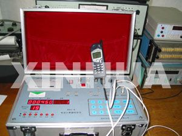

谁来监管电话计时这杆秤?
--甘肃白银市手机“计时风波”
文字：新华社记者孙志平 谭飞 制作人：李旸
迅猛发展的通信业，将人与人之间的距离一步一步缩短。随之而来的一大课题，是如何对通信业实施有效监管，既维护消费者权益，又助其快速成长。甘肃白银市手机“计时风波”，引发一场由于部门权利交叉导致的监管权争议。……
各执一词的“计时风波”
白银质监局局长陈晓阳介绍，事情起因于2002年初多名消费者投诉白银联通、白银移动多收话费。 为查明真相，2002年4月，白银质监局派员从两家公司分别申请到13034162827、13893036870手机号码，委托甘肃省计量测试研究所对其通话时长进行监测。该所随机选定2002年6月17日为测试日，对两个号码各监测通话35次。
负责此次测试的甘肃省计量测试研究所高级工程师鲁光军说，测试采用方法是，用标准测试装置接收手机摘机和挂机信号，得出实际通话时长，将其与移动运营商出具的话费单上记录的用于贸易结算的通话时长进行比较，确定通话时长计量是否超差。
《测试报告》显示，白银联通记录的13034162827号码的通话时长有34次超长。误差最大的一次，监测实际通话时长为58.5秒，话费单上记录的通话时长为148秒，超长计时89.5秒。测试时产生话费17.81元，因通话时长计量超差，多收用户话费5.23元，相对误差达41.57%。白银移动记录的13893036870号码的通话时长31次超长，最大计时误差绝对值为87.5秒。测试时产生话费17.25元，因超长计时，多收用户话费3.75元，相对误差为27.7%。
……
在甘肃省计量测试研究所的实验室里，记者看到，测试使用的设备是郑州先达电子技术有限公司生产的XDJ-5电话计时器检定仪。鲁光军一边给记者演示测试过程，一边说，这套标准装置不仅有相关部门的定型鉴定，而且经过计量行政部门考核认可，设备的计时精度为毫秒级，而移动运营商给用户提供的话费单上计时只精确到秒，故设备的计时精度完全能够满足测试需要。鉴于运营商设备的先进性、稳定性，对某个时段计时准确度的测量，能够反映运营商日常计时情况。
他说，通过数据对比，还发现一个有趣现象：当白银联通为主叫方，白银移动为被叫方时，18次通话中，两家提供的话费单上记录的通话时长都不一致，但监测实际通话时长与白银移动话费单上记录的通话时长相一致。

……
本文来自新华网甘肃频道“焦点网谈”